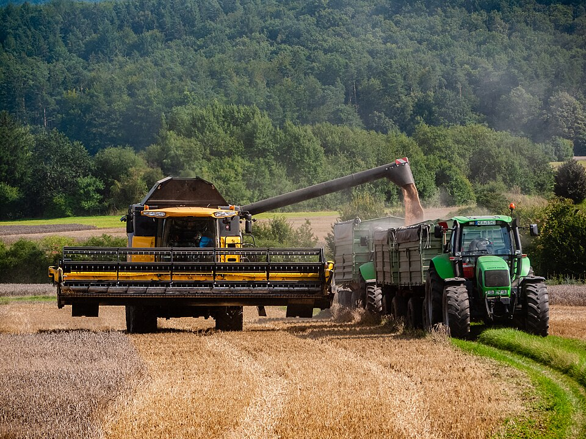
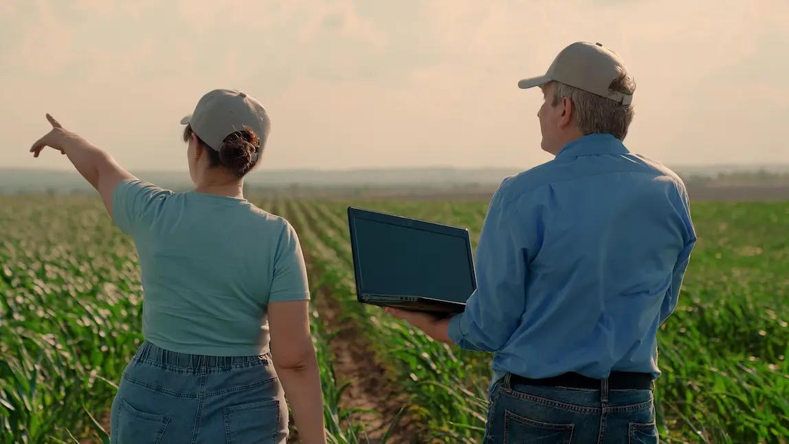
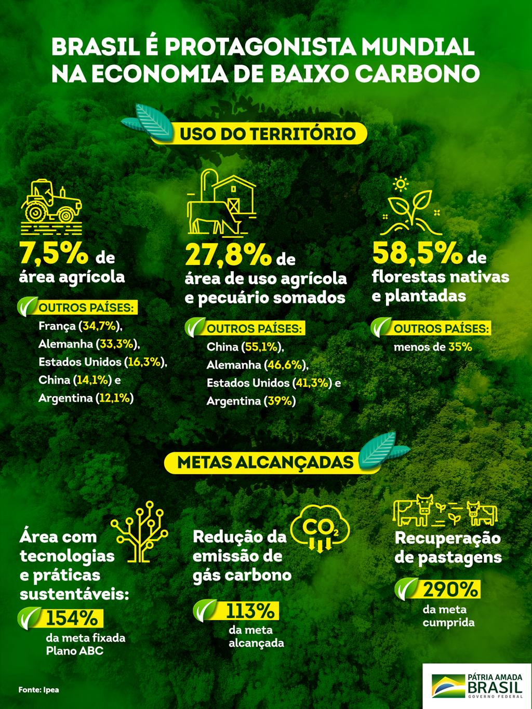

Alimentos para milhões de pessoas.
Proteção dos recursos naturais.
Inovação para o campo.
O agronegócio é responsável pela produção de alimentos, geração de empregos e desenvolvimento econômico.
A produção agrícola é essencial para o fornecimento de alimentos e para a economia do país.
A sustentabilidade busca produzir alimentos preservando os recursos naturais e protegendo o meio ambiente.
A tecnologia no campo ajuda a aumentar a produção, melhorar a eficiência e reduzir desperdícios.



O agronegócio sustentável busca equilibrar a produção agrícola com a preservação ambiental, garantindo recursos para as futuras gerações.